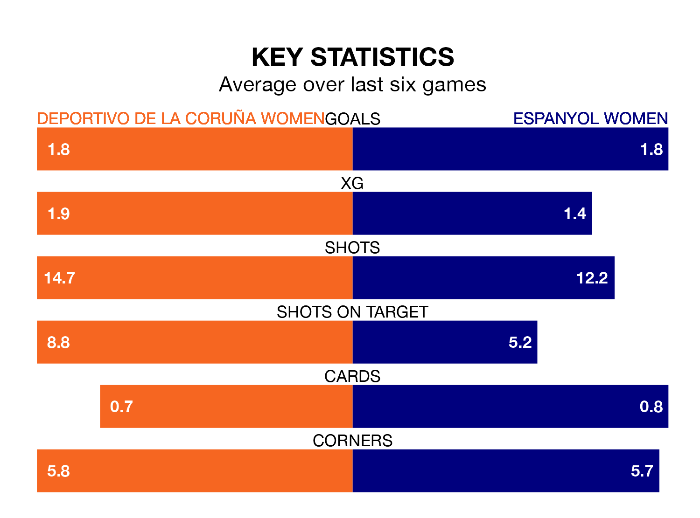

Primera Federación Femenina's top two sides face each other at Ciudad Deportiva de Abegondo-Campo 2 in Saturday's early kick-off, when second-placed Deportivo de La Coruña Women host Espanyol Women.
Deportivo de La Coruña have picked up 10 wins and four draws from 15 games so far this season, and sit on the same number of points as the visitors going into the 11am match.
Espanyol, meanwhile, have won 10 and drawn four, picking up 34 points.
With 30 goals in 15 games so far this season, Espanyol are the league's highest scorers with 2.0 goals per game. And they are conceding fewer than average, letting in nine goals at a rate of 0.6 per game.
Deportivo de La Coruña are also above average scorers, with 1.7 goals per game, compared to a league average of 1.2. They have conceded 0.7 goals per game.
In the last five years, Deportivo de La Coruña and Espanyol have played each other on five occasions. Deportivo de La Coruña won three of them and Espanyol two.
On average, Deportivo de La Coruña scored 2.0 goals and Espanyol 1.2 in those matches.
Their last meeting was on October 15, when Espanyol won 1-0 at home.
The home side are in reasonable form in Primera Federación Femenina, with three wins and three draws from their last six games.
And also with three wins and three draws over that period, the visitors' form is identical – they have both taken 12 points from 18.
Deportivo de La Coruña's last match was on January 20, a 1-1 draw against Atlético Madrid II Women, with getting the goal for Deportivo de La Coruña.
Espanyol beat Albacete Women 2-0 last time out, on Sunday, with on the scoresheet.
Updated: 09:18 (UTC), 23/01/24